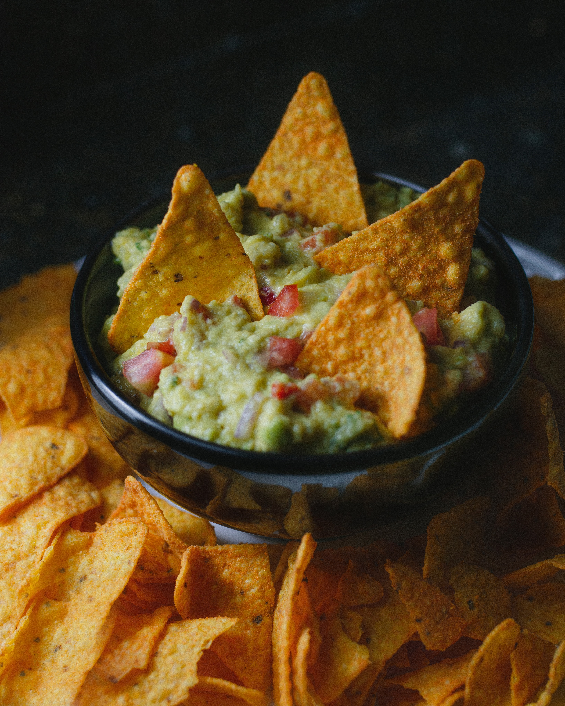

The Best Nachos
Prep Time: 20 min.
Ingredients
- Tortilla Chips
- Ground Beef
- Shredded Cheese
- Avocado
- Refried Beans
- Diced Tomatoes
- Onions
- Jalapenos
- Sour Cream
- Cilantro
- Taco Seasoning
Directions
- 1. Preheat the oven to 400°F(200°C)
- 2. Add the ground beef to a skillet over medium heat and cook for about 5 minutes,
using a spatula to break up the meat as it cooks. Drain any fat. Then add the taco
seasoning and cook for 5 minutes more, until browned and slightly crispy.
- 3. Add the refried beans and water to the skillet and stir until combined.
- 4. On a rimmed sheet pan, add a layer of tortilla chips and top with the ground beef
mixture, cheese and jalapenos. Bake for about 10 to 15 minutes, until the cheese is
melted and the edges of the tortilla chips are golden.
- 5. Remove from the oven and add the diced tomatoes, onion, avocado, sour cream, and
cilantro. Serve while warm.
Get the Full Recipe Here
